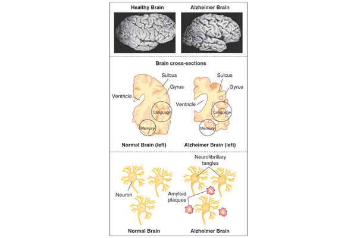

Week 7 · Topic 1
Neurocognitive Disorders
The Neurocognitive Disorders
The DSM-5 has three categories: delirium, mild neurocognitive disorder and major neurocognitive disorder. Textbook chapter 23.
| Term | Definition |
|---|---|
| Cognition | System of interrelated abilities such as perception, reasoning, judgment, intuition and memory. Allows one to be aware of oneself in relation to others. |
| Memory | Facet of cognition: retaining and recalling past experiences. |
| Delirium | Acute cognitive impairment with rapid onset, caused by a medical condition. |
| Dementia | Chronic cognitive impairment, differentiated by cause, not symptoms. |
Delirium
Delirium Is a Medical Emergency
Always secondary to a physiological condition, medication, intoxication or withdrawal. It must be caught and diagnosed early to shorten its duration, and the underlying cause must be treated. A common complication of hospitalization, in up to 80% of intensive care patients.
Clinical Picture
- Disturbance in attention and awareness: reduced ability to focus, sustain or shift attention, and reduced orientation to the environment.
- Acute onset, hours to a few days. A change from baseline.
- Fluctuates with periods of lucidity over a 24-hour day.
- Memory deficit, commonly short-term.
- Disorientation: first to time, then place, sometimes person.
- Language changes: speech pressured, rambling, incoherent or bizarre, or mute.
- Visuospatial deficits: mistakes caregivers for family, gets lost in a familiar place.
- Delusions, commonly persecutory, and hallucinations, usually visual.
- Disturbed sleep-wake pattern, often with day and night reversed.
- There is a direct physiological cause.
Commonly Identified Causes
- Medications: polypharmacy, new medications, or stopping addictive ones such as benzodiazepines.
- Infections, such as a UTI in the elderly, encephalitis or meningitis.
- Fluid and electrolyte imbalances, including dehydration.
- Hypoxia or ischemia.
- Surgery.
- Brain alterations: reduced cerebral functioning or brain metabolism, increased plasma cortisol, neurotransmitter imbalance, damage to enzyme systems, the blood-brain barrier or cell membranes.
- In children: medications or fever.
Four Cardinal Features of Delirium
- Acute onset and fluctuating course
- Reduced ability to direct, focus, shift and sustain attention
- Disorganized thinking
- Disturbance of consciousness
| Assessment Area | Findings |
|---|---|
| Illusions | Something is there and is misinterpreted: folds in a blanket seen as rats, IV tubing as snakes. Unlike a delusion or hallucination, an illusion can be explained and clarified to the person. |
| Hallucinations | Visual hallucinations are common, and so are tactile ones, such as bugs crawling on the skin. |
| Physical needs | Wandering, climbing out of bed, pulling out catheters and IV lines. A big fall risk, with self-care deficits needing help with ADLs. |
Confusion that appears only at night can be mistaken for the sundowning of dementia. Evaluate carefully anyone who cannot communicate effectively, such as a patient who also has dementia.
Nursing Care for Delirium
Outcomes
- Patient will remain safe and free from injury.
- During periods of clarity, oriented to time, place and person.
- Free from falls and injury while confused, with nursing safety measures.
- Patient and family verbalize understanding of the cause, course of illness and treatment regimen.
Planning
- Ensure necessary aids and a supportive home team before discharge.
- Visual cues in the environment for orientation, such as a board with the day and the nurse's name.
- Continuity of care providers.
Non-Pharmacological Interventions
Orientation
- Encourage expression of fears and discomfort.
- Comfort measures to instill trust.
- Frequent verbal orientation and frequent, brief interaction.
- Consistency in nursing staff.
- Television during the day, with daily news, and off at night.
- Non-verbal music, low in the background.
- Approach slowly and from the front, and address the patient by name. A hallucinating patient startles easily.
Environment
- Adequate lighting: not too bright, but enough to see by.
- Easy-to-read calendars and clocks.
- Reasonable noise level from staff, equipment and visitors. Decrease stimulation, especially at night.
- Sleep hygiene: minimize disruptions, lower the lighting.
- Physical safety: bed low and locked, careful supervision.
- Symptomatic and supportive care: hydration, nutrition, comfort and pain control, reassurance and companionship.
Pharmacological Interventions
| Intervention | Details |
|---|---|
| Antipsychotics | Very small doses, if needed: haloperidol 1 mg or even 0.5 mg rather than a whole 5 mg. |
| Benzodiazepines | lorazepam. Watch for the opposite action of agitation. With hepatic dysfunction, use a benzodiazepine instead of an antipsychotic. |
| Sleep aids | mirtazapine (Remeron) |
| Pain control | Assess objectively. Consider intermittent narcotics. |
| Drug interactions | Identify possible drug-drug interactions: 10 medications = 100% chance of a drug-drug interaction. |
| Underlying cause | Must be treated, such as antibiotics for a UTI. |
Nursing Care Summary
While the underlying cause is being identified: provide physical safety · assess medication management (eliminate, choose carefully, slow and low dosing) · provide symptomatic and supportive care · meet basic human needs · build trust and therapeutic rapport.
Communicating in Delirium and Dementia
- Use short, simple sentences.
- Speak slowly and clearly, pitching the voice low to increase the likelihood of being heard. Do not act rushed, and do not shout.
- Identify yourself by name at each contact, and call the client by their preferred name.
- Repeat questions if needed, allowing adequate time for a response.
- Point to objects or demonstrate desired actions.
- Tell clients what you want done, not what not to do.
- Listen and observe behaviors to identify the message, emotion or need being communicated.
- Educate the client (when not confused) and the family.
- Give frequent, brief verbal orientation.
Major and Mild Neurocognitive Disorders
Dementia: a degenerative, progressive neuropsychiatric disorder that results in cognitive impairment, emotional and behavioral changes, physical and functional decline, and ultimately death. A broad term for a collection of symptoms rather than one disease. The DSM-5 replaced the word with neurocognitive disorder.
- Progressive deterioration of cognitive functioning and global impairment of intellect.
- No change in consciousness, unlike delirium.
- Acquired, not developmental.
- Difficulty with memory, problem solving and complex attention.
- Affects orientation, attention, memory, vocabulary, calculation ability and abstract thinking.
Mild Neurocognitive Disorder
A modest cognitive decline from a previous level of performance. Does not interfere with ADLs. Does not necessarily progress, though most often it does.
Major Neurocognitive Disorder
A significant cognitive decline. Interferes with daily functioning and independence. The diagnosis carries a specifier naming the cause.
Causes of Major Neurocognitive Disorder
Alzheimer's disease · frontotemporal dementia · dementia with Lewy bodies · vascular dementia · traumatic brain injury · substance-induced dementia · HIV infection · prion disease · Parkinson's disease · Huntington's disease
Delirium Versus Dementia
| Aspect | Delirium | Dementia |
|---|---|---|
| Definition | Acute confusion with fluctuating consciousness. | Chronic cognitive decline affecting memory, thinking and behavior. |
| Onset | Acute and rapid, over hours to days. | Gradual, over months to years. |
| Duration | Short-term, reversible with treatment. | Long-term, progressive and irreversible. |
| Cause | Typically triggered by an underlying issue such as infection, medications or dehydration. | Degenerative diseases such as Alzheimer's disease and vascular dementia. |
| Symptoms | Confusion, altered attention, disorientation, hallucinations, disrupted sleep. | Memory loss, poor judgment, language difficulties, difficulty with daily tasks. |
| Level of consciousness | Fluctuates. May be drowsy or hyperactive. | Generally clear, but can become impaired in later stages. |
| Memory | Short-term memory affected. May not remember events. | Short-term memory affected early on. Long-term memory may be impaired in later stages. |
| Behavioral changes | Agitation, restlessness, paranoia, mood swings. | Withdrawn, apathetic, repetitive behaviors, poor decision-making. |
| Reversibility | Often reversible with treatment of the underlying cause. | Progressive and irreversible. |
Alzheimer's Disease
60% to 80% of all dementias. Not a normal part of aging: irreversible, progressive and ultimately fatal, with a mean survival of about 10 years after diagnosis. Diagnosed after other illnesses are ruled out, since no laboratory test confirms it. Early onset is before age 65. Marked by disturbances in executive functioning and memory impairment, with much anger and denial.
| Term | Definition |
|---|---|
| Aphasia | Loss of language ability. Expressive: cannot find the words to express ideas (Broca's area). Receptive: cannot interpret what is said (Wernicke's). Progresses from word-finding trouble to a few words, then babbling or mutism. |
| Apraxia | Loss of purposeful movement. Interferes with tasks such as dressing. |
| Agnosia | Loss of sensory ability to recognize objects. On the MMSE, cannot name a pencil, a watch or a shoe. Progresses to not recognizing people. |
| Agraphia | Diminishing ability to read or write. |
| Confabulation | Unconscious creation of stories or answers in place of actual memories. Not lying. Maintains self-esteem. |
| Perseveration | Persistent repetition of a word, phrase or gesture, long after the stimulus is gone. |
| Hyperorality | Tendency to put everything in the mouth to taste and chew, such as napkins or clothing. |
| Sundowning | Tendency for mood to deteriorate and agitation to increase in the later part of the day, with the fading of light, or at night. Hoarding is also seen. |
Etiology
Risk Factors
- Age and family history. Age is the greatest risk factor.
- Cardiovascular disease
- Social engagement and diet
- Head injury and traumatic brain injury
- Hypertension and dyslipidemia, with diabetes and obesity also commonly found
- Biological factors: neuronal degeneration and genetics
Hallmarks of the Pathological Diagnosis
- Tau proteins and beta-amyloid plaques create neurofibrillary tangles.
- Amyloid plaques: sticky clumps between nerve cells, blocking communication at synapses.
- Neurofibrillary tangles: abnormal collections of protein threads inside nerve cells, mainly tau. They block the pathways for nutrients, and the cells die.
- Brain atrophy: the cerebral cortex shrivels, the hippocampus shrinks severely and the ventricles grow larger.
- Oxidative stress and free radicals: the damage precedes the tangles and plaques, which is the support for high-dose vitamin E in high-risk people.
- Inflammation: anti-inflammatory drugs such as ibuprofen and low-dose aspirin are prescribed to lower the risk.

| Neurotransmitter | Role in Alzheimer's Disease |
|---|---|
| Acetylcholine | Involved with learning, memory and mood. As the disease progresses the brain produces less acetylcholine. Cholinesterase inhibitors keep the acetylcholinesterase enzyme from breaking it down. |
| Glutamate | Involved with cell signaling, learning and memory. In Alzheimer's disease there is excess glutamate. NMDA antagonists help reduce excess calcium by blocking some NMDA receptors. |
Stages and Priority of Care
Mild
Forgetfulness, misplaced articles, decreased recall, social withdrawal, frustration with self. Changes may not be apparent to others, and memory tests are still done fairly well.
Priority: safety, and delay cognitive decline.
Moderate
Decreased self-care and way-finding, disoriented to time and place, wandering, pacing, possible hallucinations or delusions, decreased visual perception leading to accidents, emotional lability. Needs supervision, and symptoms are noticeable.
Priority: protect the patient from hurting self, such as by wandering.
Severe
Cannot care for self, loses the use of language, minimal long-term memory. Incontinence, gait disturbance, sometimes seizures. Constant, complete care.
Priority: physical needs become the focus of care: nutrition, hygiene, self-care.
The mild stage corresponds to mild neurocognitive disorder, the moderate and severe stages to major. Each person moves through the stages at a different rate. Memory loss starts with recent events and fades backward.
Assessing Dementia
| Domain | What to Assess |
|---|---|
| Biologic | Past and present health status, compared to norms. Physical examination and review of systems: vital signs, neurologic and nutritional status, bladder and bowel function, hygiene, skin integrity, rest and activity, sleep patterns, fluid and electrolyte balance. Physical functions: self-care, sleep-wake disturbances, activity and exercise, nutrition, pain. |
| Psychological | Suspiciousness, delusions and illusions · hallucinations · mood changes · anxiety · catastrophic reactions, which are over-the-top responses to events. Common delusions: "this is not my house", being stolen from, a spouse plotting harm. A common illusion: mistaking a son for a husband. |
| Defense mechanisms | Denial · confabulation · perseveration · avoidance of questions |
| Behavioral responses | Apathy and withdrawal · restlessness, agitation and aggression · aberrant motor behavior · disinhibition · hypersexuality · signs of stress and anxiety. For restlessness, give something to do, such as folding towels or an activity apron. |
| Social | Social system · spiritual assessment · legal status, such as guardianship, power of attorney, a living will or DNR status · quality of life. Primary caregiver support is essential to the well-being of the person with dementia. |
Cognitive Assessment Tools
- Mini-Mental State Examination (MMSE)
- Dementia Severity Rating Scale
- Geriatric Depression Scale
- Memory Impairment Screen
- Mini-Cog: three sections, word recognition, clock drawing and word recall
- Functional Assessment Staging Tool (FAST)
Diagnostic Tests
- Computed tomography (CT) scan
- Positron emission tomography (PET)
- Mental status questionnaires, such as the MMSE
- Complete physical and neurological exam
- Complete medical and psychiatric history
- Review of recent symptoms, medications and nutrition
Nursing diagnoses: impaired sleep · risk for injury and wandering · self-care deficit · anxiety · confusion · impaired verbal communication · hopelessness · caregiver stress · anticipatory grief.
Nursing Care for Dementia
Confusion and Agitation
- Speak clearly, slowly and directly.
- Do not approach from behind.
- Face the patient and call them by name every time.
- Use para-verbal and nonverbal communication techniques.
- One direction at a time, in concrete terms: "before lunch", not "in one hour".
- Do not argue, and do not speak as if the person is not there.
- Walk, or walk and talk, with a restless patient.
- Picture albums of pets, wildlife and scenery.
- Music the person likes, from when they were young, since recent memories go first.
- Patience. Allow extra time to respond.
Physical Care
- Self-care: maintain independence as much as possible, helping with sequential tasks such as dressing and bathing. Oral hygiene.
- Nutrition: monitor weight, oral intake and hydration. Well-balanced meals. Observe for swallowing difficulties, which occur in the later stages.
- Support bowel and bladder function with frequent reminders and assistance to the bathroom.
- Sleep interventions, balancing activity and exercise with sleep.
- Pain and comfort: assess carefully. Do not rely on the patient verbalizing pain. Watch behaviors and expressions.
- Relaxation.
Medications for Alzheimer's Disease
The FDA has approved two classes. Neither cures the disease. Both slow and delay the progression of symptoms. Cholinesterase inhibitors are usually tried first, with an NMDA antagonist added or substituted as the disease progresses, and the two are sometimes given together.
| Aspect | Acetylcholinesterase Inhibitors (AChEI) | NMDA Antagonist |
|---|---|---|
| Drugs | donepezil · rivastigmine (PO and transdermal patch) · galantamine | memantine |
| Action | Stop the breakdown of acetylcholine, which is deficient in Alzheimer's disease, increasing its availability and duration. | Blocks glutamate at the NMDA receptor. Excess glutamate lets calcium move into neurons and damage them. Reduces abnormal excitatory signals. |
| Indication | galantamine: mild to moderate Alzheimer's disease. donepezil and rivastigmine: all stages, mild, moderate and sometimes severe. | Moderate to severe dementia. Used in all stages, and in vascular dementia. |
| Effect | Delay, not decrease, cognitive decline: stabilize memory, language and orientation. Peak in 3 months but continue to delay decline. Donepezil delays progression about 6 to 12 months. Minimal benefit after one year. | Slows the decline and can slightly improve cognitive functioning. |
| Side effects | Nausea and vomiting are the most common: take with food. Dizziness, headache, insomnia. Rarely bradycardia and syncope. All follow from more acetylcholine throughout the body. The risk doubles in people over 85 after more than a year of use. | Mild: dizziness, confusion, headaches and constipation. |
The Rivastigmine Patch
- Useful when swallowing becomes difficult, or when the person does not believe anything is wrong.
- Changed daily, with fewer GI effects than the oral form.
- Can cause skin irritation. Stop it if the irritation spreads beyond the size of the patch.
Antipsychotics May Increase the Risk of Mortality in Dementia
Mostly from infections or cardiovascular effects. Use with extreme caution. Medications for behavioral symptoms are off label: antipsychotics, antidepressants, antianxiety agents and anticonvulsants. Try nonpharmacological interventions first, then start low and use the smallest dose for the shortest time possible.
Antipsychotics come up again here — review in Antipsychotic Medications if needed
Self-Test Flashcards
Click a card to flip it and check your answer.